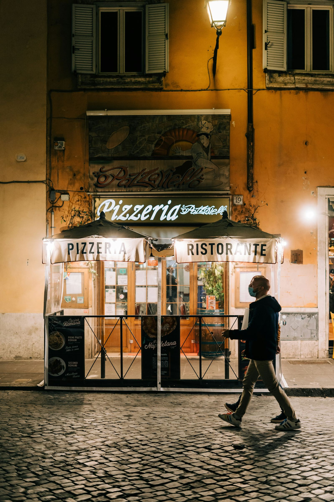

If you're curious to discover what's true behind the famous stereotypes about Italians, you're in the right place! Italy is famous for its delicious cuisine, world-class fashion, and much more. But let's see what myths and truths there are about us!
Se sei curioso di scoprire cosa c'è di vero dietro i famosi stereotipi sugli italiani, sei nel posto giusto! L'Italia è famosa per la sua cucina deliziosa, la moda di classe mondiale e tanto altro ancora. Ma andiamo a vedere quali sono i miti e le verità su di noi!

Gli italiani amano solo pasta e pizza?
Assolutamente no! Sebbene amiamo la pasta e la pizza, la nostra cucina è incredibilmente varia e complessa. Ogni regione ha le sue specialità uniche e ogni famiglia ha le proprie ricette tramandate di generazione in generazione. L'Italia vanta più di 350 ristoranti stellati e una ricchezza di street food che riflette la nostra passione per il cibo.
Gli italiani si vestono bene?
Sì, ci piace curare il nostro stile! La moda italiana è celebre in tutto il mondo per il suo design e la qualità. Da Versace a Valentino, il Made in Italy è sinonimo di eleganza.
Gli italiani gesticolano tanto quando parlano?
Assolutamente! Gli italiani sono noti per la loro passione e comunicano con gesti vivaci. È una parte divertente della nostra cultura e del nostro modo di esprimerci.
Gli italiani sono pigri e mammoni?
Non proprio! Anche se teniamo alla nostra famiglia, molti giovani italiani lavorano sodo e sono impegnati in settori innovativi che contribuiscono all'economia.
Gli italiani girano sempre in Vespa?
L'immagine della Vespa è iconica, ma oggi ci muoviamo con una varietà di mezzi di trasporto. Amiamo le nostre auto e moto, ma il nostro stile di vita si adatta a diverse esigenze di mobilità.
Gli italiani sono creativi?
Assolutamente sì! L'Italia ha una lunga storia di geni creativi, dai grandi artisti come Leonardo da Vinci e Michelangelo ai designer contemporanei. La nostra creatività si riflette nella nostra cultura e nel nostro approccio alla vita quotidiana.
Gli italiani sono dei latin lover?
Forse sì, forse no! L'Italia è romantica per natura, con città come Venezia e Verona che ispirano amore e passione.
Gli italiani amano il caffè?
Chi non ama il caffè? È una parte essenziale della nostra giornata, sia per l'energia che per il socializzare.
Gli italiani non parlano lingue straniere?
Al contrario! In Italia ci sono regioni dove si parla altre lingue oltre all'italiano, dimostrando la nostra diversità linguistica e culturale.
Gli italiani amano la Dolce Vita?
Certo! L'Italia è rinomata per il suo stile di vita rilassato e piacevole, tra buon cibo, arte e bellezze naturali.

Oltre alle prelibatezze culinarie e alla passione per la moda, l'Italia è una nazione energica e creativa, che ama esprimersi con gesti vivaci e godersi la dolce vita........ scusate il rumore della moka chiama!
fonte: 10 stereotipi sugli italiani
Parole Chiave
| Italiano | Una persona proveniente dall'Italia. |
| Stereotipo | Un'idea o una credenza generalizzata su un gruppo di persone. |
| Cucina | Il modo di cucinare e preparare i cibi. |
| Moda | Lo stile di abbigliamento e le tendenze nel vestire. |
| Gesticolare | Fare movimenti con le mani e le braccia mentre si parla. |
| Mammoni | Giovani adulti che sono molto legati alla propria madre. |
| Vespa | Un tipo di motocicletta popolare in Italia. |
| Creativi | Persone che hanno una grande immaginazione e inventiva. |
| Latin lover | Un uomo italiano visto come affascinante e romantico. |
| Caffè | Una bevanda calda molto popolare in Italia. |
Esercizio
Domande
- Perché gli stranieri sono attratti dall'Italia, secondo il testo?
- Perché gli italiani gesticolano mentre parlano, secondo il testo?
- Cosa significa essere "mammoni" secondo gli stereotipi italiani?
- Puoi nominare alcuni marchi di moda italiani famosi menzionati nel testo?
- Perché il caffè è importante nella cultura italiana, secondo il testo?